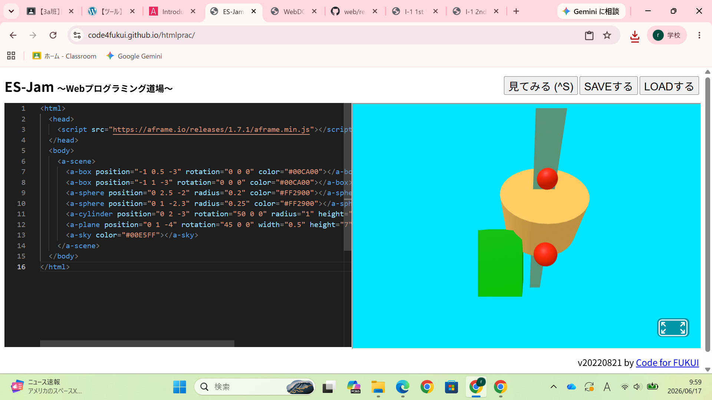
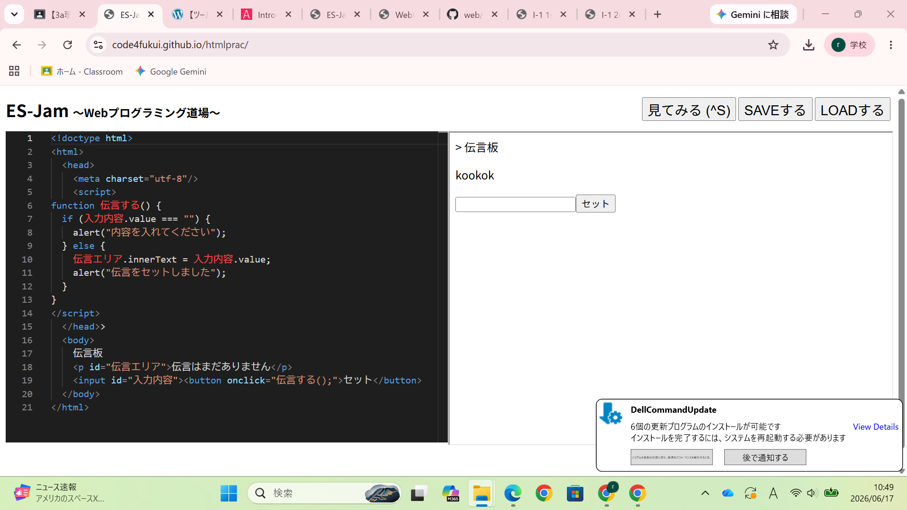

３週目のレポート ： 公大高専１年実習I-1
3a班10番 角野琉翔
第3週目
3-1 JavaScript体験：VR空間を作る

自作した３次元空間
1.内容
HTMLを使用して自分だけの立体空間を作った。
物体の大きさや形を変えるだけでなく、色も数字や英語を使って表すことができ、
想像を形にすることのできる一般的なものになりつつあると学んだ。 2.感想
様々な角度で確認することができるため、より正確に自分の考えたものを立体空間で
作成することができると感じた。
建物の設計などでイメージをするときに役立ちそうだと感じた。
3-2 JavaScript体験：伝言プログラムを作る

伝言板
1.内容
プログラムを組んで、伝言を残すというシステムを作った。
利用する人がどういう動きをするのかを予測して、
正しい動きをさせるようにすることが必要と分かった。。
2.感想
システムを作るときは、利用する人たちが使いやすいように工夫をしたり、
トラブルが起こらないように自分が利用者である場合のことも考える必要があると感じた。
また、不具合などもすぐに修正することが大切と感じた。
各ページへのリンク
1週目のレポート
2週目のレポート
3週目のレポート
私のホームページ